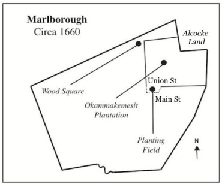

Marlborough and Okkokonimesit was an expample of a common pattern in the relationship between towns belonging to the settler colonists and nearby Indigenous villages including praying towns. In multiple locations, there is evidence of colonists slowly yet systematically acquiring land from local Indigenous tribes through methods that would be considered by many to be dishonest and unfair.
The land grant that was given to Marlborough to help establish the town ended up conflicting with the land grant that was given to the Praying Indians, and an area being contested included the Indians’ planting field. A deal was eventually struck allowing the Indians to keep the planting field, however the colonists in Marlborough would get first right to purchase these lands if the Praying Indians abandoned the property. Clauses like this in deals with American Indians only created incentive for the colonists to pressure them off of their land
Map of Marlborough and Okkokonimesit, circa 1660. Based on a map of Marlborough created by Charles Hudson, with information added by Paul Brodeur:
While the deed conflict occurred in 1656, Marlborough wasn’t incorporated as a town until 1660. Puritan towns were required to build meeting houses, so in 1663 the Marlborough colonists moved to finally build their meeting house. They decided to build the meeting house right in a portion of the Okkokonimesit Indians’ planting field, despite the fact that a deal had been established which theoretically protected their rights to that land. This was almost certainly an effort from the colonists to extort more land from the Praying Indian inhabitants and put pressure on the borders between colonial and American Indian holdings.
Paul Brodeur's Marlborough History Page